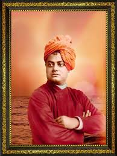

Birth
Born in Kolkata as Narendranath Datta.
A spiritual leader, philosopher and one of India's greatest thinkers.

Swami Vivekananda was a spiritual leader, philosopher and influential voice of Indian thought. His message emphasized strength, self-confidence, knowledge and the unity of humanity.
He became widely known for representing Indian spiritual traditions at the Parliament of the World's Religions in Chicago in 1893, where his address introduced many listeners to Vedanta and India's spiritual heritage.
His teachings connected spirituality with practical service. He encouraged young people to develop discipline, fearlessness and compassion while working for the welfare of others.
His ideas continue to inspire students, educators and people seeking a life guided by purpose, character and service.
Born in Kolkata as Narendranath Datta.
His meeting with Sri Ramakrishna became a major turning point in his spiritual journey.
Delivered his famous address in Chicago and gained international recognition.
Founded the Ramakrishna Mission, emphasizing spiritual development and service.
Passed away at Belur Math, leaving a lasting influence on modern Indian thought.
“Arise, awake, and do not stop until the goal is reached.”
— Swami Vivekananda
Vivekananda's emphasis on character, education, strength and service remains influential. His life is remembered for bringing together spiritual ideals and a strong call for social responsibility.